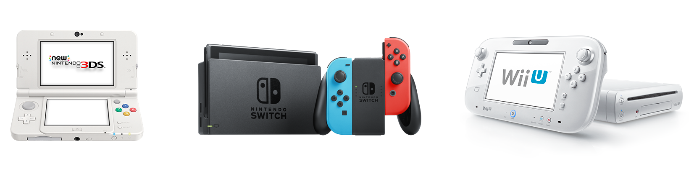

Register as a Nintendo Developer

Register for access to Nintendo developer tools and resources to create and publish games and applications for current Nintendo platforms.
Resources are provided for multiple development environments
including HTML5, Unity and native C++ software development.
If you are interested in Nintendo Switch development resources, after the registration fill up and submit the Nintendo Switch Access Request form.
Nintendo requires an overview of your planned project as well as your development experience history.
Nintendo Developer Portal has been tested with the latest Google Chrome and Mozilla Firefox installed in the Windows environment.
In order to use this site, JavaScript and Cookies must
be enabled.
Does Your Company Already Have an Account?
If your company already has a Nintendo developer account on this website (or in NDID / OMAS) contact your organization administrator to create your account.
New Account?
No current account with Nintendo? Whether you are an indie developer, a large publisher, a tool developer, a localization company or anybody else in the business of making video games, start with the registration below. An account will be established and an administrator will be assigned.
Individual developers only need personal information to register. Larger developers will need to enter additional information for the organization administrator and a company officer.